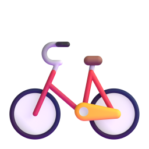
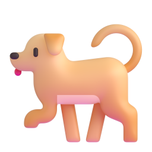
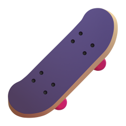

GR-007
A1
have got
Have got бүтэц
By the end, you can talk about your family, your things and how people look.
Энэ хичээлийн төгсгөлд гэр бүл, эд зүйл, хүмүүсийн гадаад төрхийн тухай ярьж чадна.
Describing someone
Хүнийг дүрслэх
Nomin
This is Nomin.
Энэ Номин.
She
's got
long black hair and brown eyes.
Тэр урт хар үстэй, бор нүдтэй.
She
's got
two brothers.
Тэр хоёр ахтай.
She
's got
a bike, but she
hasn't got
a car.
Тэр дугуйтай ч машингүй.
Hair, eyes, family, things: all with have got.
Үс, нүд, гэр бүл, эд зүйл: бүгд have got-оор.
What have got is for
Have got юунд хэрэглэгддэг вэ?
Family
Гэр бүл
I
've got
a sister.
Надад эгч бий.
Things you own
Эзэмшдэг зүйл
He
's got
a new phone.
Түүнд шинэ утас бий.
Looks
Гадаад төрх
She
's got
blue eyes.
Тэр цэнхэр нүдтэй.
Illness
Өвчин
I
've got
a cold.
Би ханиад хүрсэн.
have got, has got
Have got-ийн хэлбэрүүд
Subject
Өгүүлэгдэхүүн
Full
Бүтэн
Short
Товч
I / you / we / they
have got
've got
he / she / it
has got
's got
The same split as is and are.
is, are-тэй адил хуваагдана.
If the next word is got, 's means has.
Дараагийн үг нь got бол 's нь has гэсэн үг.
The negative
Үгүйсгэх хэлбэр
I
haven't got
a car.
Надад машин байхгүй.
She
hasn't got
a phone.
Түүнд утас байхгүй.

We
haven't got
any pets.
Манайд гэрийн тэжээвэр амьтан байхгүй.
With a plural, add any.
Олон тоотой бол any нэмнэ.
Questions and short answers
Асуулт ба богино хариулт
Question
Асуулт
Yes
Тийм
No
Үгүй
Have
you got a pen?
Чамд үзэг байна уу?
Yes, I have.
No, I haven't.
Has
she got a sister?
Түүнд эгч байдаг уу?
Yes, she has.
No, she hasn't.
Have
they got a car?
Тэдэнд машин байдаг уу?
Yes, they have.
No, they haven't.
In short answers, got disappears.
Богино хариултад got байхгүй.
have or have got?
have уу, have got уу?
Owning: both are correct
Эзэмших: хоёулаа зөв
I have a car. = I
've got
a car.
Надад машин бий.
Actions: only have
Үйлдэл: зөвхөн have
I
have
breakfast at 8.
Би 8 цагт өглөөний цай уудаг.
We
have
lunch at school.
Бид сургууль дээрээ өдрийн хоол иддэг.
have got is more common in everyday speech.
have got өдөр тутмын ярианд илүү түгээмэл.
Watch out!
Анхаар!
Mongolian says "to me there is". English says I've got.
Монголоор: Надад ах бий. Англиар: I've got a brother.
Буруу
He
have
got a dog.
Зөв
He
has
got a dog.
Түүнд нохой бий.
Буруу
Have you got a pen?
Yes, I have
got
.
Зөв
Have you got a pen?
Yes, I
have
.
Чамд үзэг байна уу? Тийм ээ.
Буруу
I
've got
breakfast at 8.
Зөв
I
have
breakfast at 8.
Би 8 цагт өглөөний цай уудаг.
Model text: my best friend
Загвар эх: миний хамгийн дотны найз
Ganaa

This is my best friend, Ganaa.
Энэ миний хамгийн дотны найз Ганаа.
She
's got
short hair and big brown eyes.
Тэр богино үстэй, том бор нүдтэй.
She
's got
two sisters, but she
hasn't got
a brother.
Тэр хоёр эгч дүүтэй ч ах дүүгүй.
She
's got
a new bike. It's red.
Тэр шинэ дугуйтай. Дугуй нь улаан.
Have
I
got
a bike? No, I
haven't
. But I
've got
a skateboard!
Надад дугуй бий юу? Үгүй. Харин скейтборд бий!
Remember
Санаж ав
1
he / she / it
has got
· everyone else
have got
he / she / it
has got · бусад
have got
2
's got
= has got
's got нь has got гэсэн үг.
3
Yes, I
have
. · No, I
haven't
.
Богино хариултад got байхгүй.
Now try the exercises below this video.
Одоо энэ видеоны доорх дасгалаар мэдлэгээ шалгаарай.